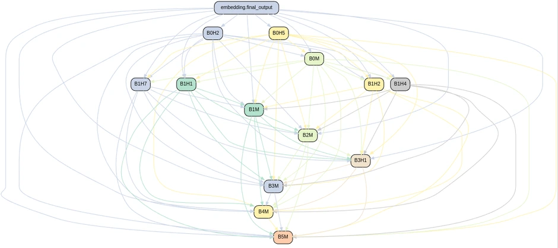

Which parts of the network does the task need?
I trained a small Vision Transformer on 58 animal classes from Tiny ImageNet, then used an ACDC-style activation-patching procedure to find a sparse computational circuit. The discovery task groups the animals into six coarse categories.
My contribution
I implemented a prunable ViT, the clean/corrupted input pairing, activation patching and graph utilities in PyTorch. The model has six blocks and eight attention heads per block. Each candidate edge is tested by replacing its clean activation contribution with a corrupted one; edges below a KL-divergence threshold are removed.

The performance trade-off
At τ = 0.01, the circuit retained 7 of 48 attention heads and all MLP blocks. The recorded Ryzen 7 4700U CPU workload fell from 6.56 to 3.55 seconds, a 1.85× speedup. The timing is an average over ten runs of the evaluation workload, not latency per image.

View the exact values
| Configuration | Heads removed | Workload time | Pre-retraining accuracy |
|---|---|---|---|
| Unpruned · τ = 0.0001 | 0 / 48 | 6.56 s | 60.07% |
| Moderate · τ = 0.003 | 18 / 48 | 5.17 s | 56.10% |
| Sparse · τ = 0.01 | 41 / 48 | 3.55 s | 31.83% |
Aggressive pruning reduced the initial benchmark accuracy. I then created a fresh model with the discovered sparse architecture and trained it from scratch, reaching a reported 55.24% validation accuracy. That retraining result is separate from the pre-retraining timing sweep.
What the experiment supports. Circuit discovery can provide a useful compact architecture, but removing components has an accuracy cost and speedup depends on the implementation and hardware. GPU speedup was not established.